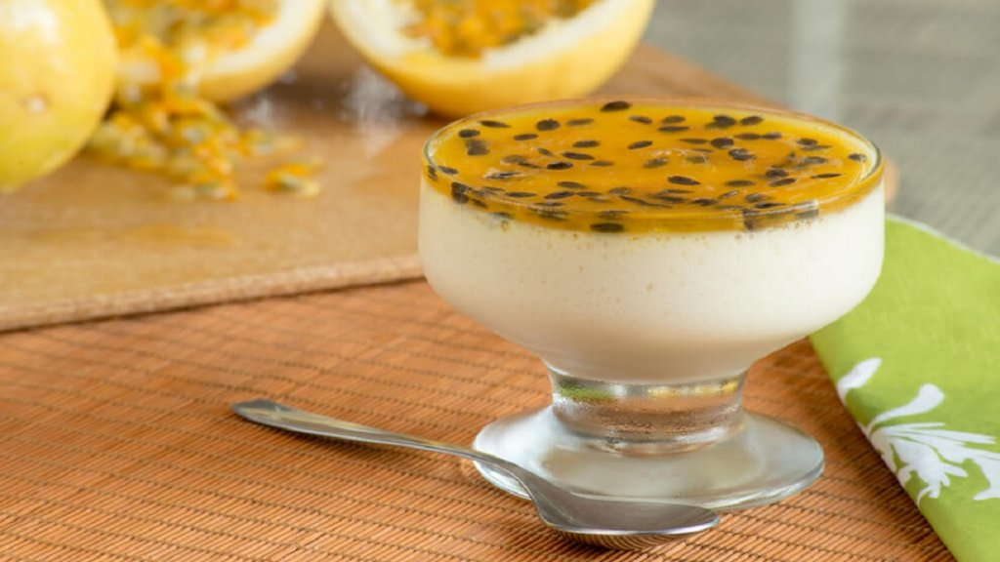
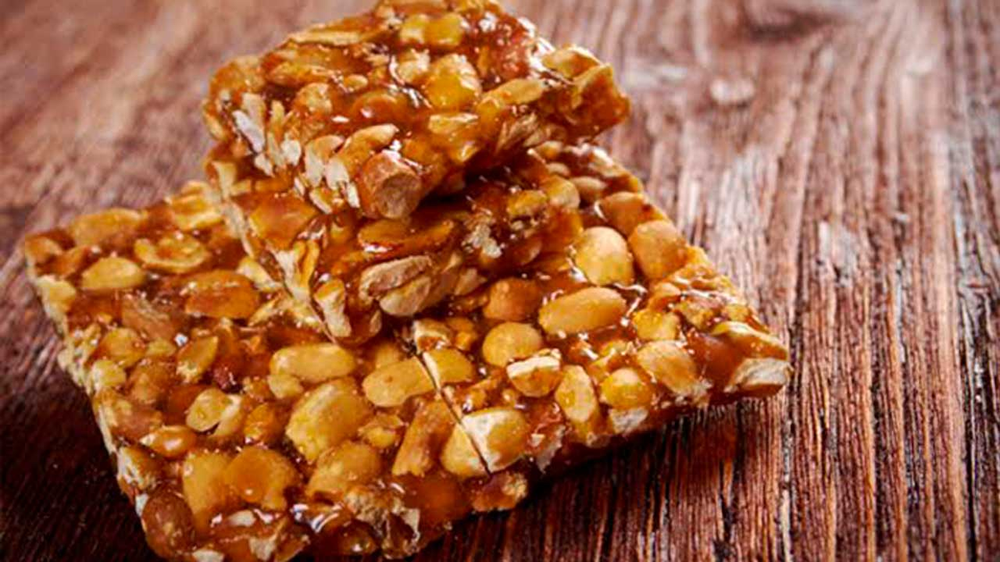

Sobremesas

Ingredientes:
- 1 lata de leite condensado
- 1 lata de creme de leite sem soro
- 1 lata de suco de maracujá (medida pela lata de leite condensado)
Modo de Preparo:
- Em um liquidificador, bata o creme de leite, o leite condensado e o suco concentrado de
maracujá.
- Em uma tigela, despeje a mistura e leve à geladeira por, no mínimo, 4 horas.

Ingredientes:
- 3 xícaras de chá de amendoim crú
- 1 xícara de chá de Karo
- 2 xícaras de chá de açúcar
- 1 colher de chá de bicarbonato de sódio
Modo de Preparo:
- Em recipiente fundo, mistura-se o amendoim, o açúcar e o Karo, leva-se ao forno por 10
minutos
em potência alta, mexendo algumas vezes.
- Retiro do microondas acrescente o bicarbonato, mexa e despeje imediatamente em pedra
mármore
untada com margarina.Deixe esfriar e quebre em pedaços.